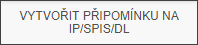
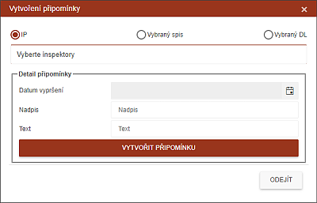

Vytvořit připomínku na IP/SPIS/DL
Supervizor má možnost vytvořit připomínku.

Připomínka může být vytvořena na libovolný počet inspektorů, spisů či dlužníků.

Výběr proběhne buď výběrem spisů, nebo klikem na pole nadepsané (na obrázku) "Vyberte inspektory".
Systém do výběrového pole vloží informace z vybraných spisů: